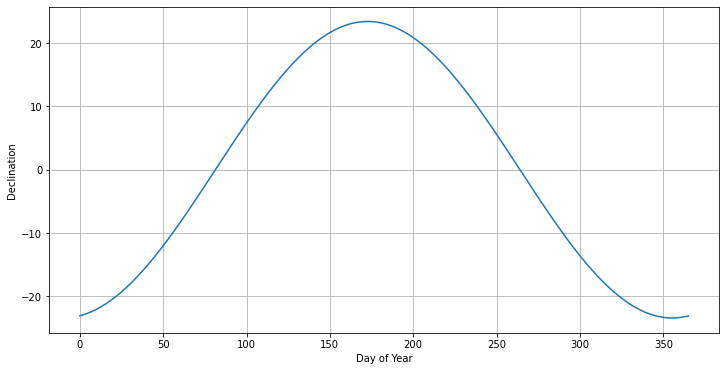
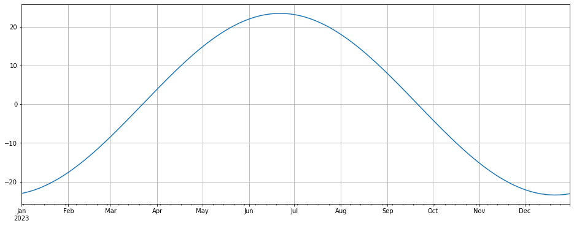
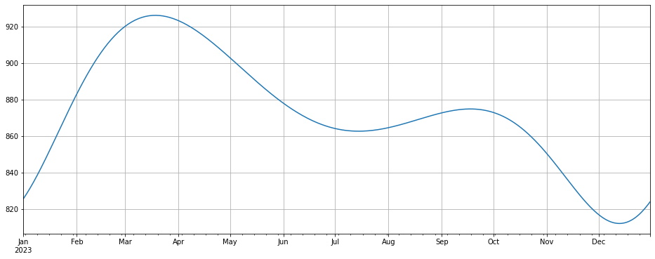

import numpy as np
import pandas as pd
import hvplot.pandas
import matplotlib.pyplot as pltASHRAE Irradiance sample calculation
ASHRAE Irradiance sample calculation
ASHRAE provides a formula for calculating the irradiance at the surface on a plane that is perpendicular to the incoming solar radiation. This equation is:
\[ I_B = A e^{-Km} \]
where
\[ A = 1160 + 75 sin[360(n - 275)/365] \]
\[ K = 0.174 + 0.035 sin[360(n - 100)/365] \]
\[ m = 1/ sin(\beta) \]
\[ \beta = 90 - Latitude + Declination \]
\[ Declination = \delta = 23.45 sin[360/365 (n - 81)] \]
and n is the day number (e.g., May 1 = 31 + 28 + 31 + 30 + 1 = 121). A is the irradiance (W m-2), K is the attenuation per air mass, and m is the air mass.
def declination(day):
d = -23.44 * np.cos( (2.*np.pi) / 365.25 * (day + 10) ) # Approximate
return ddef declination(day):
d = 23.44 * np.cos( (2.*np.pi) / 365.25 * (day - 81) ) # Approximate
return ddef A(n):
return 1160. + 75.*np.sin(360/365*(n-275)*np.pi/180) # W m-2def K(n):
return 0.174 +0.035*np.sin(360/365*(n-100)*np.pi/180) # unitlessdef m(latitude, declination):
return 1. / np.sin((90. - latitude + declination)*np.pi/180)days = np.arange(0,366)
dec = []
for day in days:
dec.append(declination(day))
dec = np.array(dec)
plt.figure(figsize=(12,6))
plt.plot(days, dec)
plt.grid();
plt.xlabel('Day of Year');
plt.ylabel('Declination');
A(121)1124.6630369244601K(121)0.186378664276173declination(121)14.788451200638994m(46.73, declination(121))1.1784278038586675lat = 46.73
day = 121
dec = declination(day)
Ib = A(day) * np.exp(-K(day)*m(lat, dec))
print('The ASHRAE irradiance at the surface is %4.0f W m-2'% Ib)The ASHRAE irradiance at the surface is 903 W m-2Now create an annual cycle of solar radiation
dates = pd.date_range('2023-01-01', '2023-12-31', freq='d')dec = []
Ib = []
for date in dates:
day = int(date.strftime('%-j'))
dec.append(declination(day))
Ib.append(A(day) * np.exp(-K(day)*m(lat, dec[-1])))
dec = np.array(dec)
df = pd.DataFrame({'declination': dec, 'irradiance': Ib})
df.index = datesdf.declination.plot(figsize=(16,6), grid=True)
df.irradiance.plot(figsize=(16,6), grid=True)
NOTE THAT this is the solar radiation (in W m-2) on a surface that is always perpendicular to the sunlight. This is quite different from the TOA insolation that we calculated before. See the figures in the Solar Radiation Calculator for another example.